Research only; architecture NOT_APPROVED. All failures retained. Native scores do not prove coherent geometry. Pixel A is a fidelity reference, not the desired final representation. Controls are analytic fixtures, not real-world generalization evidence. C and D have identical geometry; alpha still uses inherited grid runs. Source crops are nearest-neighbor reference displays, not vector ground truth.
Source, A pixel reference, B spline, C flat, D adaptive appearance. Images shown at native pixel size; scroll horizontally. Error maps use 6x absolute RGB error.
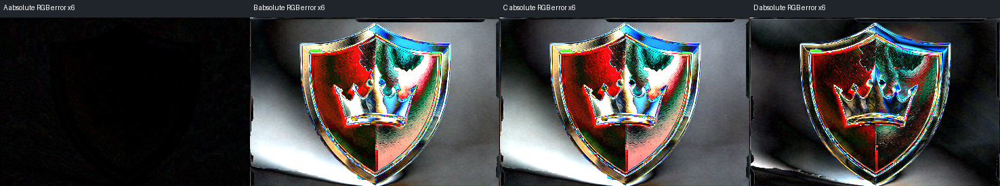
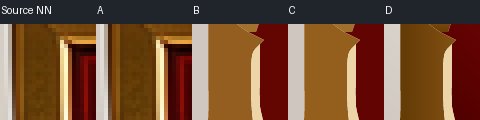
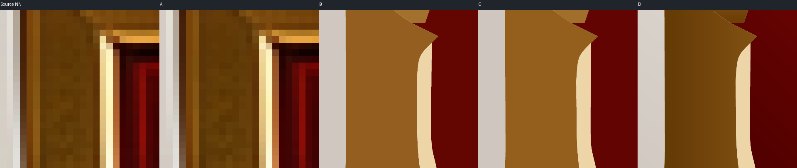
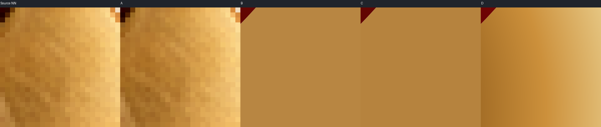
A full SVG | B full SVG | C full SVG | D full SVG | metrics | fit diagnostics
| Condition | SSIM white | PSNR dB | Worst tile RMSE | RGB paths | Bytes |
|---|---|---|---|---|---|
| A | 0.995660178903147 | 51.55712012366561 | 0.96335865379065 | 34617 | 1995131 |
| B | 0.7451431526140219 | 19.000541958798852 | 60.10776086884843 | 35 | 46193 |
| C | 0.7488099259435331 | 18.96890892359088 | 60.001368039959445 | 35 | 47115 |
| D | 0.815370993840816 | 23.047115726935065 | 47.866332983980854 | 35 | 56930 |
Source, A pixel reference, B spline, C flat, D adaptive appearance. Images shown at native pixel size; scroll horizontally. Error maps use 6x absolute RGB error.
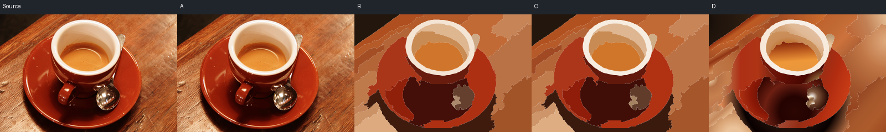
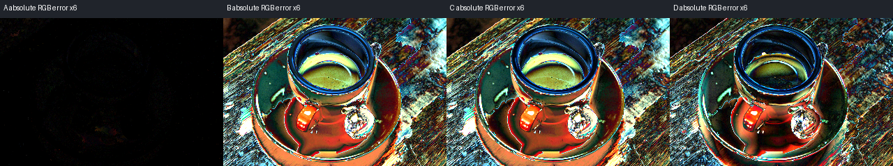
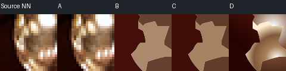
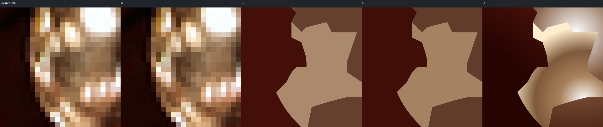
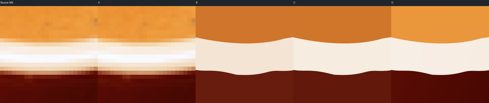
A full SVG | B full SVG | C full SVG | D full SVG | metrics | fit diagnostics
| Condition | SSIM white | PSNR dB | Worst tile RMSE | RGB paths | Bytes |
|---|---|---|---|---|---|
| A | 0.9978939485349833 | 54.97216325881176 | 1.2771784902014804 | 55898 | 3266303 |
| B | 0.4825827224680253 | 19.669442879362073 | 61.297520893657136 | 26 | 41727 |
| C | 0.48573331049089036 | 19.654933053209067 | 62.075876055202265 | 26 | 42395 |
| D | 0.5359649657659462 | 21.68179311556389 | 51.26574961251745 | 26 | 54187 |
Source, A pixel reference, B spline, C flat, D adaptive appearance. Images shown at native pixel size; scroll horizontally. Error maps use 6x absolute RGB error.
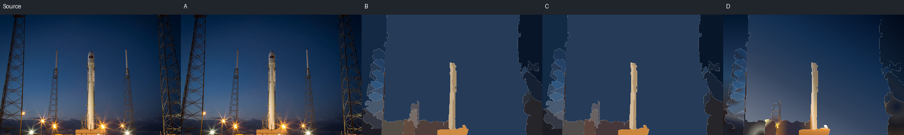
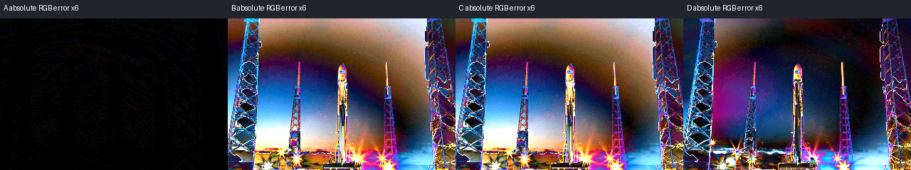
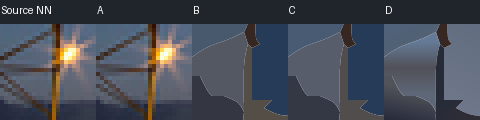
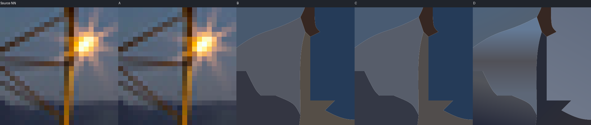
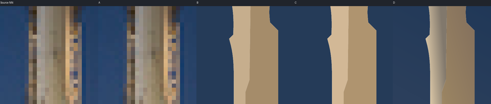
A full SVG | B full SVG | C full SVG | D full SVG | metrics | fit diagnostics
| Condition | SSIM white | PSNR dB | Worst tile RMSE | RGB paths | Bytes |
|---|---|---|---|---|---|
| A | 0.996047144718033 | 52.69320461783692 | 0.8579059413284574 | 30892 | 1760005 |
| B | 0.6289075968914496 | 19.574158224392054 | 65.84966593527928 | 28 | 26079 |
| C | 0.6287244835570897 | 19.552526875050138 | 65.69294102108688 | 28 | 26777 |
| D | 0.6935388327945625 | 22.27853972127122 | 54.06085235709624 | 28 | 38173 |
Source, A pixel reference, B spline, C flat, D adaptive appearance. Images shown at native pixel size; scroll horizontally. Error maps use 6x absolute RGB error.
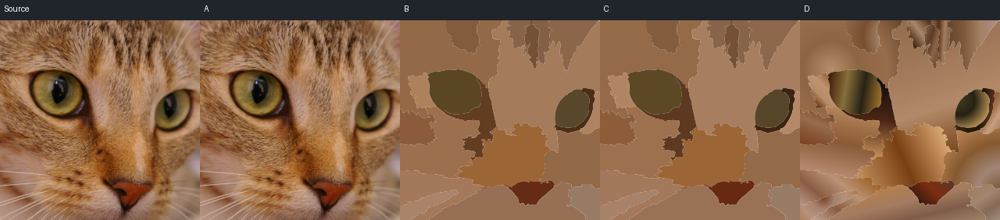
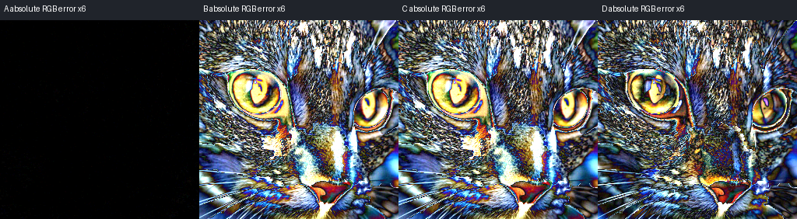
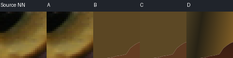
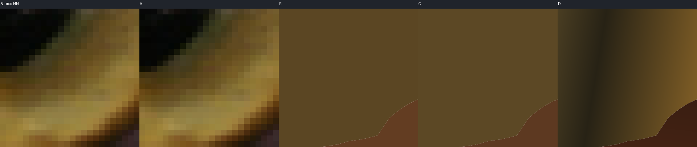
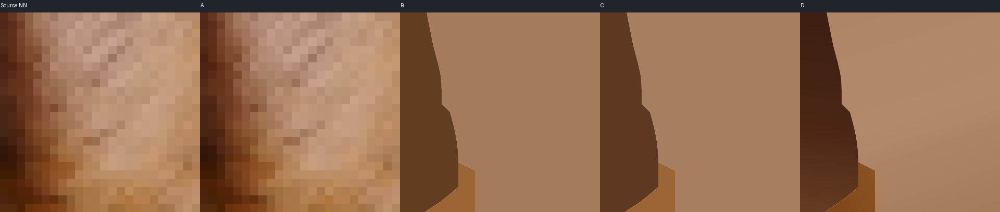
A full SVG | B full SVG | C full SVG | D full SVG | metrics | fit diagnostics
| Condition | SSIM white | PSNR dB | Worst tile RMSE | RGB paths | Bytes |
|---|---|---|---|---|---|
| A | 0.9998233720742756 | 62.844480659724276 | 0.3928064090617667 | 60920 | 3251022 |
| B | 0.32327310619660116 | 19.70827137515514 | 42.04055813908556 | 22 | 34591 |
| C | 0.32566692539103187 | 19.691211844482456 | 41.67959695202598 | 22 | 35151 |
| D | 0.39568612679522586 | 21.498260378003057 | 36.182462228497755 | 22 | 44955 |
Source, A pixel reference, B spline, C flat, D adaptive appearance. Images shown at native pixel size; scroll horizontally. Error maps use 6x absolute RGB error.
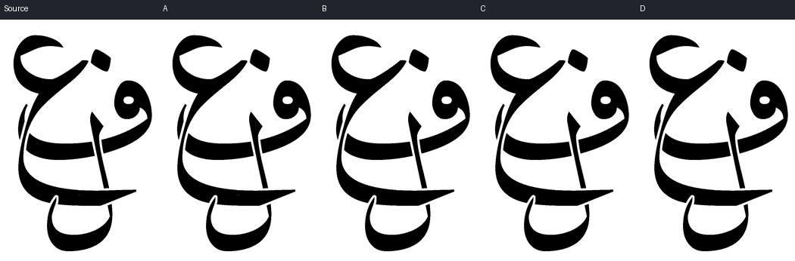
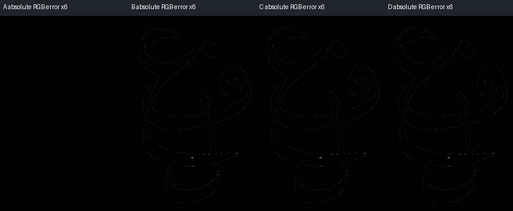
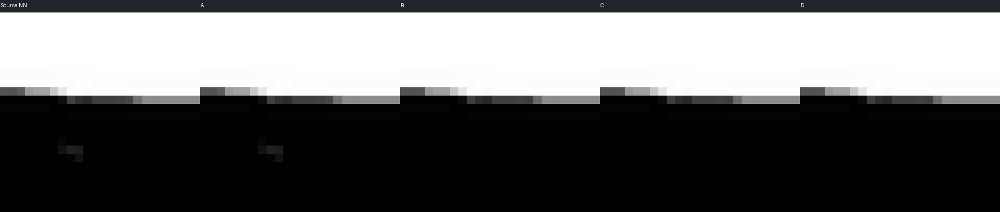
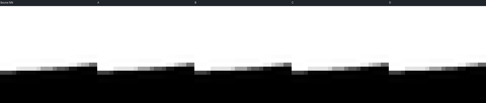
A full SVG | B full SVG | C full SVG | D full SVG | metrics | fit diagnostics
| Condition | SSIM white | PSNR dB | Worst tile RMSE | RGB paths | Bytes |
|---|---|---|---|---|---|
| A | 0.9999991283355998 | 73.20303347810682 | 0.11785113019775792 | 2197 | 317916 |
| B | 0.9994566108054913 | 53.32205457181129 | 1.8335700604740104 | 28 | 181879 |
| C | 0.9994566108054913 | 53.32205457181129 | 1.8335700604740104 | 28 | 182630 |
| D | 0.9994566108054913 | 53.32205457181129 | 1.8335700604740104 | 28 | 182630 |
Source, A pixel reference, B spline, C flat, D adaptive appearance. Images shown at native pixel size; scroll horizontally. Error maps use 6x absolute RGB error.
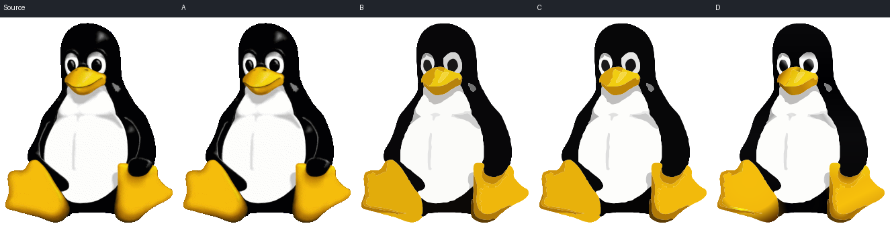
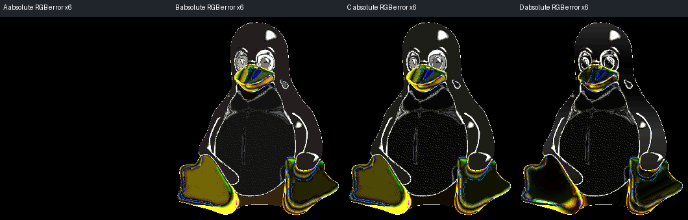
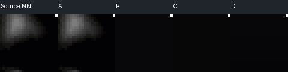
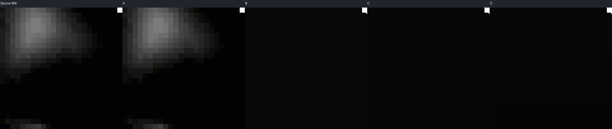
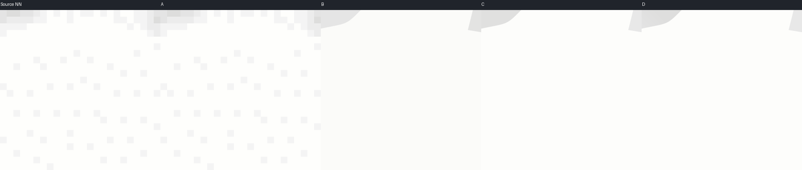
A full SVG | B full SVG | C full SVG | D full SVG | metrics | fit diagnostics
| Condition | SSIM white | PSNR dB | Worst tile RMSE | RGB paths | Bytes |
|---|---|---|---|---|---|
| A | 1.0 | None | 0.0 | 8746 | 553917 |
| B | 0.8579163329733192 | 24.8796914807912 | 56.02490574827024 | 29 | 37861 |
| C | 0.862740243020825 | 24.817478161838267 | 58.77096598072634 | 29 | 38614 |
| D | 0.8761950624131977 | 26.05598628864918 | 29.71845973394875 | 29 | 49396 |
Source, A pixel reference, B spline, C flat, D adaptive appearance. Images shown at native pixel size; scroll horizontally. Error maps use 6x absolute RGB error.
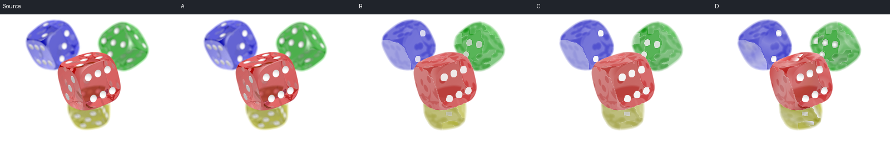
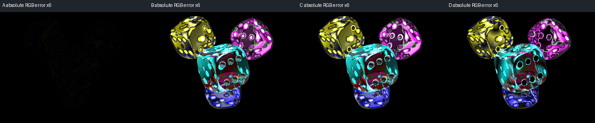
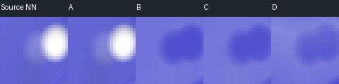
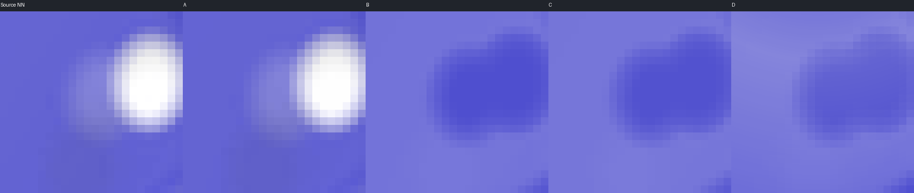
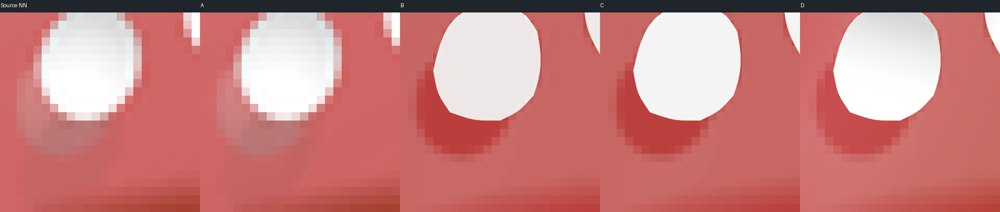
A full SVG | B full SVG | C full SVG | D full SVG | metrics | fit diagnostics
| Condition | SSIM white | PSNR dB | Worst tile RMSE | RGB paths | Bytes |
|---|---|---|---|---|---|
| A | 0.9996217261611925 | 58.52537742000639 | 0.6371220284738762 | 18199 | 1430162 |
| B | 0.8193208327307548 | 23.566893626399516 | 44.62511671319938 | 29 | 428691 |
| C | 0.8220087096249981 | 23.597996818044663 | 43.84871675360067 | 29 | 429458 |
| D | 0.8431162168351491 | 24.876924944128437 | 36.85552981745073 | 29 | 442407 |
Source, A pixel reference, B spline, C flat, D adaptive appearance. Images shown at native pixel size; scroll horizontally. Error maps use 6x absolute RGB error.
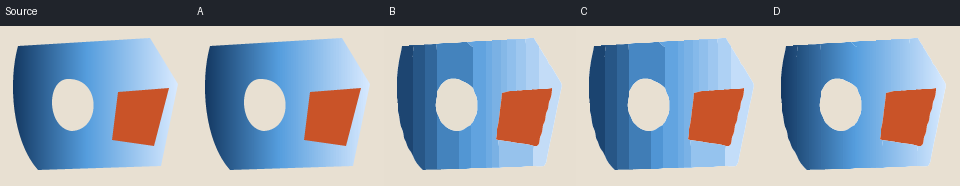
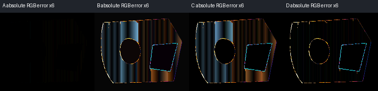
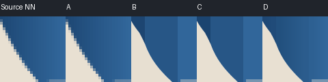
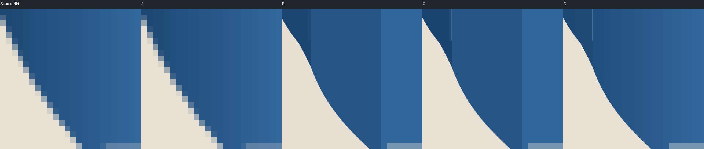
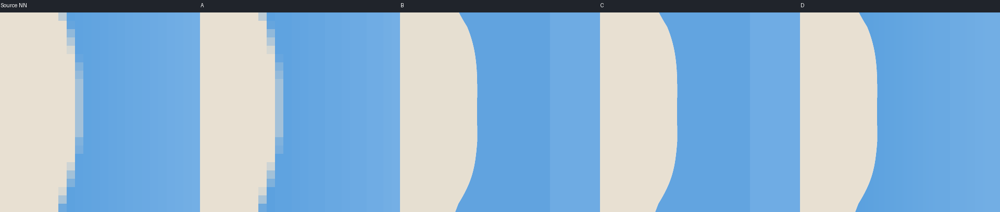
A full SVG | B full SVG | C full SVG | D full SVG | metrics | fit diagnostics
| Condition | SSIM white | PSNR dB | Worst tile RMSE | RGB paths | Bytes |
|---|---|---|---|---|---|
| A | 0.9994639983307341 | 60.476485412474915 | 0.5160194198542015 | 818 | 45930 |
| B | 0.9181445770900871 | 30.983483233384366 | 13.720256656066363 | 25 | 10854 |
| C | 0.9179000674854562 | 31.171096686051566 | 11.727413464293821 | 25 | 11522 |
| D | 0.9789802123135375 | 33.47513248614558 | 9.017127799360503 | 25 | 15971 |
Source, A pixel reference, B spline, C flat, D adaptive appearance. Images shown at native pixel size; scroll horizontally. Error maps use 6x absolute RGB error.
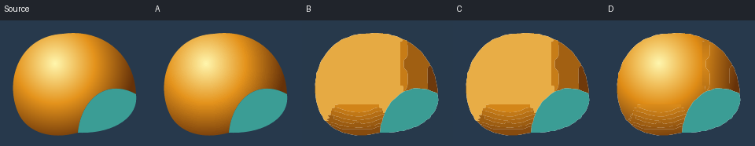
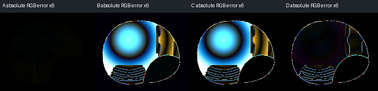
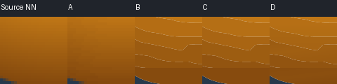
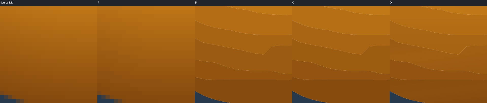
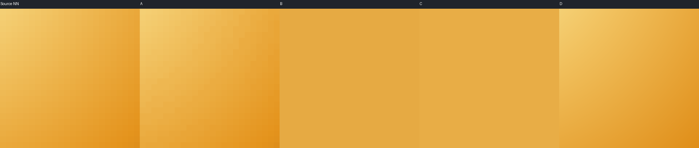
A full SVG | B full SVG | C full SVG | D full SVG | metrics | fit diagnostics
| Condition | SSIM white | PSNR dB | Worst tile RMSE | RGB paths | Bytes |
|---|---|---|---|---|---|
| A | 0.9982988195798023 | 54.58225252895221 | 0.7806247497997998 | 4089 | 241138 |
| B | 0.8178461677315901 | 23.025638586882234 | 46.476066309266464 | 18 | 13061 |
| C | 0.8169806903692255 | 23.00019541334923 | 44.02233689654984 | 18 | 13508 |
| D | 0.9135012974588174 | 31.459222101556175 | 12.74038393505078 | 18 | 17889 |